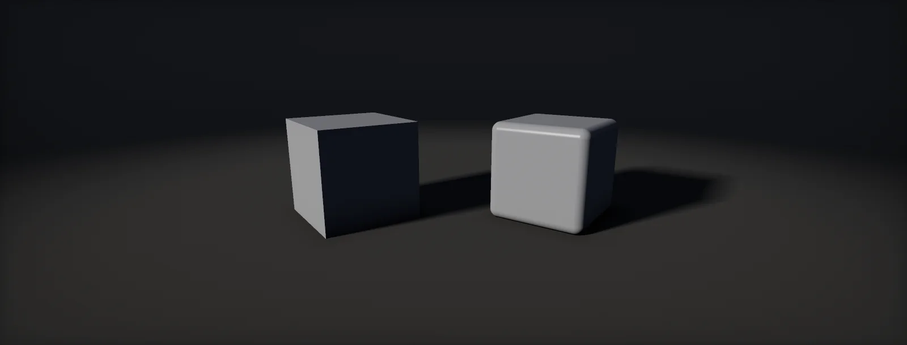

Bevels and Custom Normals
Why sharp edges look wrong, three ways to round an edge, what chamfers really cost in vertices, face-weighted normals and the mid-poly workflow, baking bevels into normal maps, transferring normals from proxies, and what destroys custom normals, built in Unity HDRP and Unreal.

Why perfectly sharp edges look wrong
No manufactured edge is perfectly sharp. Even a machined metal edge has a radius of a fraction of a millimetre, and wood, stone and painted surfaces have much rounder ones. That rounded zone faces many directions at once, so it catches a highlight from almost any light: the thin bright line that makes an edge read as real. A mesh with a 90° hard edge has no such zone; its two faces meet with nothing in between, and the edge looks cut out of paper. Whether a bevel is worth anything depends on how wide it is on screen:
Under a pixel, a bevel cannot hold a highlight; it only aliases. At one to a few pixels it reads as the thin line players expect. Wider than that, its shape (round, flat chamfer, worn) becomes visible and should be modelled or baked with care. The size that matters is the one at the distance where the asset is usually seen, and for each LOD at its switch distance.
Three ways to round an edge
A bevel can live in the geometry, in a texture or in the shader. The choice decides where the cost goes and what the rest of the pipeline must support:
| Method | Silhouette | Costs | Needs | Typical use |
|---|---|---|---|---|
| Modelled chamfer or bevel with weighted normals | Rounded | Triangles (often no extra vertices for one segment) | Normal editing that survives export and import | Mid-poly hard surface, modular kits with tiling materials, close-up props |
| Bevel baked into a normal map | Sharp | A unique normal map, or a trim strip | Unique UVs (or trims), enough texels per bevel | Hero props with unique textures; small bevels on large assets |
| Bevel strip on a trim sheet | Sharp | A share of a shared trim texture | Edges modelled to land on the trim's bevel strip | Architecture and kits (trim sheets) |
| Rounded edges computed in the shader | Sharp | Pixel work per frame | Edge distance data (vertex colour, SDF) or screen-space edge detection | Rare in games; offline renderers (Blender's Bevel node at render time) |
Many assets mix them: modelled chamfers on the large edges that shape the silhouette, baked or trimmed bevels on small details, and none at all on edges that are always far away.
Modelled chamfers: what they cost
Adding a chamfer looks expensive, but the count that matters is GPU vertices, and a hard edge is not free either: a hard-edged box has 8 positions but 24 vertices, because each corner needs a separate normal for each of its three faces. A box with one chamfer segment on every edge and smooth normals has exactly the same 24 vertices; it only adds triangles:
More segments round the edge further but add vertices and triangles quickly; one or two are typical for game assets, three or more only for large, close-up curves. The chamfer only looks right if the large faces stay flat, which depends on how the vertex normals are computed. That is the next chapter.
Face-weighted normals
A smooth vertex normal is the normalised sum of the normals of the faces around it. Plain averaging gives every face the same vote, so the tiny chamfer pulls the normal of the large face's corner a quarter of the way around the edge, and the interpolated normals bend across the whole large face: it shades like a curved surface. Face-weighted normals (FWN) weight each face by its area (or by the angle at the vertex, or both), so the large face dominates its own corners and stays flat, and the narrow chamfer carries the entire bend:
Every major package can compute them:
- Blender: the Weighted Normal modifier, with the modes Face Area, Corner Angle and Face Area and Angle, a Weight that sets how strongly larger faces win, Keep Sharp to respect sharp edges, and Face Influence to use face strength set on faces.
- 3ds Max: the Weighted Normals modifier; Maya: angle- and area-weighted normals in the mesh settings and the Set to Face tools; Houdini: the Normal SOP's weighting method (by face area or vertex angle).
- Engines, when they calculate normals on import: Unity's Normals Mode (Area Weighted, Angle Weighted, Area And Angle Weighted) and Unreal Modeling Mode's Normals tool (area and angle weighting).
Weighted normals make the normal map's job smaller too: a baked normal map then only adds detail instead of correcting the gradients of the low-poly shading, which also makes it compress better.
The mid-poly workflow
Chamfers plus weighted normals produce clean highlights without any baked normal map. That is the core of the mid-poly workflow for hard-surface assets: a moderately dense mesh, chamfered on every edge that matters, with weighted normals; surface detail from tiling materials, trim sheets and decals instead of unique bakes. id Software's Doom Eternal environment art, for example, was modelled with face-weighted normals and then surfaced with tiling materials, material blending and decals (the layer stack). The memory trade:
- Gains: no unique normal maps, UVs that can overlap and mirror freely, texel density set by the tiling material instead of the unwrap, and edits without re-baking.
- Costs: more triangles, LOD chains that must remove chamfers carefully (a collapsed chamfer leaves a smooth-shaded corner; switch the LOD's edges to hard or keep the chamfer), and wear or damage on edges must come from masks and decals, not from a bake.
Baking bevels into normal maps
Where the silhouette can stay sharp, a bevel can be baked. The classic route bakes it from a high-poly model with real rounded edges:
Without a high poly, Blender's Bevel shader node (Cycles only) computes rounded-edge normals by sampling the nearby surface within a radius. At render time it is expensive, so for games it is baked once: plug it into the material's normal input and bake a tangent-space normal map onto the low poly (the build chapter has a script).
A baked bevel only exists where the texture has enough texels for it, at the mip the GPU actually reads:
Small bevels on large assets therefore vanish at a distance and are better modelled; large, soft bevels survive many mips and are good candidates for baking. For tiling surfaces with no unique UVs, a bevel strip on a trim sheet gives the same effect: model the edge so its faces land on the strip.
Transferring and editing normals
Normals do not have to come from the mesh they shade. Copying them from a simpler, smoother shape is the usual fix for shading artefacts around cuts and booleans: a cylinder with holes punched into it gets messy gradients around each hole, and transferring the normals of a clean cylinder onto it makes it shade like the clean one. Foliage uses the same idea with a sphere or proxy around the crown:
- Blender: the Data Transfer modifier (Face Corner Data > Custom Normals) from a proxy object, or the Normal Edit modifier toward a target.
- Houdini: Attribute Transfer of
Nfrom a proxy, or the Normal SOP; Max: Edit Normals; Maya: Transfer Attributes with normals.
Transferred normals still need the triangulation and tangents to match the bake, if a normal map is baked on top: bake after the transfer, on the final normals.
What destroys custom normals
Custom normals are fragile because every tool in the chain may recompute them:
- Export: export normals explicitly (FBX: normals or smoothing groups plus tangents), triangulated, so the engine does not reinterpret the topology.
- Import: set the engine to import the normals, not calculate them (Unity: Normals: Import; Unreal: Normal Import Method Import Normals, and Recompute Normals off in the build settings), and to compute tangents with MikkTSpace from those normals.
- LOD generation: automatic reduction rebuilds normals from the simplified mesh; check every generated LOD, or author LODs with their own weighted normals.
- Precision: normals and tangents stored with 8 bits per component show banding on large, smooth chamfered faces; Unreal's Use High Precision Tangent Basis stores them with 16 bits.
- Mirroring and negative scale: flip the winding and the tangent sign; apply transforms before baking and exporting.
- Mesh edits after the bake: any change to normals after a normal map was baked breaks the match between them.
Build it in Unity HDRP
Unity's part is import settings that keep authored normals intact, a tool that computes area-weighted normals for meshes from sources that cannot export them, and a Blender script that bakes bevels without a high poly. Written for Unity 6 with HDRP 17; Unity 2022 LTS works the same apart from a few renamed menu entries.
- Export from the DCC triangulated, with normals (and smoothing groups for Max/Maya), and with the weighted normals already applied (Blender: Weighted Normal modifier, applied on export). Put the FBX in a folder named
HardSurfacewithHardSurfaceImport.csinAssets/Editor: the importer then keeps the normals and computes MikkTSpace tangents from them. - Where Unity should calculate normals instead (for example meshes exported without them), set Normals =
Calculate, Normals Mode =Area And Angle Weighted and a Smoothing Angle of 45–60°. That is the importer's own face-weighted normal option. - For meshes already in the project (procedural meshes, assets from tools without weighted normals), select them and run Tools > Optimization > Weighted Normals (Area). It writes a new mesh asset with area-weighted normals, keeps edges sharper than 60° hard, and recalculates tangents.
- Inspect: Window > Analysis > Rendering Debugger > Material > Material =
Normal(world space) shows whether large faces are flat (one even colour) and the chamfers carry the change. A directional light at a grazing angle shows the same in the lit view. - Baked bevels without a high poly: open the low poly in Blender, give it unique UVs, run
bake_bevel.pywith the radius you want, then use the image as the normal map (Unity uses the same OpenGL convention as Blender). Set the texture's type to Normal map on import. - LODs: if you generate LODs in Unity (or with a tool), run the audit on every LOD; simplified meshes often lose the weighted normals. Author the LOD normals in the DCC where it matters.
// Assets/Editor/HardSurfaceImport.cs
// Import rules for meshes with authored (weighted) normals: models in any folder named "HardSurface".
using UnityEditor;
public class HardSurfaceImport : AssetPostprocessor
{
void OnPreprocessModel()
{
if (!assetPath.Replace('\\', '/').Contains("/HardSurface/")) return;
var mi = (ModelImporter)assetImporter;
mi.importNormals = ModelImporterNormals.Import; // keep the weighted normals from the DCC
mi.importTangents = ModelImporterTangents.CalculateMikk; // same tangent basis as the bakers
mi.meshCompression = ModelImporterMeshCompression.Off;
mi.weldVertices = true; // welds only vertices whose attributes all match
mi.optimizeMeshPolygons = true;
mi.optimizeMeshVertices = true;
}
}// Assets/Editor/WeightedNormals.cs
// Tools > Optimization > Weighted Normals (Area): recomputes the normals of the selected meshes,
// weighting each face by its area. Existing hard edges are kept: across a shared position, a face
// contributes only if its normal is within the smoothing angle of the vertex's own faces.
// Writes "<mesh>_FWN.asset" next to the source and assigns it with Undo.
using System.Collections.Generic;
using System.IO;
using UnityEditor;
using UnityEngine;
public static class WeightedNormals
{
const float SmoothingAngle = 60f;
[MenuItem("Tools/Optimization/Weighted Normals (Area)")]
static void Run()
{
foreach (var mf in Selection.GetFiltered<MeshFilter>(SelectionMode.Deep))
{
var src = mf.sharedMesh; if (src == null) continue;
var m = Object.Instantiate(src); m.name = src.name + "_FWN";
var v = m.vertices; var tri = m.triangles; int nt = tri.Length / 3;
var fn = new Vector3[nt]; var area = new float[nt];
for (int t = 0; t < nt; t++)
{
var c = Vector3.Cross(v[tri[3 * t + 1]] - v[tri[3 * t]], v[tri[3 * t + 2]] - v[tri[3 * t]]);
area[t] = c.magnitude * 0.5f;
fn[t] = area[t] > 0f ? c / (2f * area[t]) : Vector3.zero;
}
var byPos = new Dictionary<Vector3Int, List<int>>(); // faces around each position
var own = new List<int>[v.Length]; // faces that use each vertex
for (int t = 0; t < nt; t++)
for (int k = 0; k < 3; k++)
{
int i = tri[3 * t + k];
var key = Vector3Int.RoundToInt(v[i] * 10000f);
if (!byPos.TryGetValue(key, out var list)) byPos[key] = list = new List<int>();
list.Add(t);
(own[i] ??= new List<int>()).Add(t);
}
float cosLimit = Mathf.Cos(SmoothingAngle * Mathf.Deg2Rad);
var n = new Vector3[v.Length];
for (int i = 0; i < v.Length; i++)
{
if (own[i] == null) { n[i] = Vector3.up; continue; }
Vector3 refN = Vector3.zero; foreach (int t in own[i]) refN += fn[t] * area[t];
refN.Normalize();
Vector3 sum = Vector3.zero;
foreach (int t in byPos[Vector3Int.RoundToInt(v[i] * 10000f)])
if (Vector3.Dot(fn[t], refN) >= cosLimit) sum += fn[t] * area[t];
n[i] = sum.sqrMagnitude > 0f ? sum.normalized : refN;
}
m.normals = n;
m.RecalculateTangents();
string p = AssetDatabase.GetAssetPath(src);
string dir = string.IsNullOrEmpty(p) ? "Assets" : Path.GetDirectoryName(p).Replace('\\', '/');
string path = AssetDatabase.GenerateUniqueAssetPath($"{dir}/{m.name}.asset");
AssetDatabase.CreateAsset(m, path);
Undo.RecordObject(mf, "Weighted normals"); mf.sharedMesh = m;
Debug.Log($"Weighted normals: {path}");
}
}
}# bake_bevel.py (Blender): bake rounded-edge normals from the Bevel shader node into a
# tangent-space normal map. Select the low-poly object (unique, non-overlapping UVs), set the
# values below and run it. It adds nodes to the object's materials: undo (Ctrl+Z) after the bake,
# or work on a copy.
import bpy
RADIUS = 0.004 # metres: the rounding to fake
SAMPLES = 16 # Bevel node samples
SIZE = 2048
obj = bpy.context.active_object
scene = bpy.context.scene
scene.render.engine = 'CYCLES' # the Bevel node only works in Cycles
scene.cycles.samples = 16
img = bpy.data.images.new(obj.name + "_bevelN", SIZE, SIZE, alpha=False)
img.colorspace_settings.name = 'Non-Color'
for slot in obj.material_slots:
mat = slot.material
if mat is None or not mat.use_nodes:
continue
nt = mat.node_tree
bsdf = next((n for n in nt.nodes if n.type == 'BSDF_PRINCIPLED'), None)
if bsdf is None:
continue
bevel = nt.nodes.new('ShaderNodeBevel')
bevel.samples = SAMPLES
bevel.inputs['Radius'].default_value = RADIUS
old = [l for l in nt.links if l.to_socket == bsdf.inputs['Normal']]
if old: # keep an existing normal map underneath the bevel
nt.links.new(old[0].from_socket, bevel.inputs['Normal'])
nt.links.new(bevel.outputs['Normal'], bsdf.inputs['Normal'])
target = nt.nodes.new('ShaderNodeTexImage')
target.image = img
nt.nodes.active = target # the active image node is the bake target
bpy.ops.object.bake(type='NORMAL', normal_space='TANGENT', margin=16)
img.filepath_raw = bpy.path.abspath("//" + img.name + ".png")
img.file_format = 'PNG'
img.save()
print("Saved", img.filepath_raw, "- OpenGL convention (Y+): fine for Unity; flip green for Unreal")Bake a normal map only after the normals are final: any later change to the normals breaks the match between the mesh and its bake.
Build it in Unreal Engine
In Unreal the import options and the static mesh build settings decide whether authored normals survive; Modeling Mode can also recompute them with area and angle weighting inside the editor. Written for Unreal Engine 5.6 and later. Substrate is production-ready from 5.7; check Project Settings > Rendering > Substrate to see which material model a project uses.
- Import the FBX with Normal Import Method =
Import Normals(tangents computed from them) orImport Normals and Tangentsif the bake used exported tangents. Leave Compute Weighted Normals off when the file already has them. - In the Static Mesh Editor, LOD0 > Build Settings: Recompute Normals off, Recompute Tangents on, Use MikkTSpace on, and Use High Precision Tangent Basis on for large chamfered faces, where 8-bit tangents show banding.
keep_authored_normals.pyapplies this to every LOD of the selected meshes. - Without a DCC: Modeling Mode > Attribs > Normals recomputes normals in the editor; enable area and angle weighting and split by angle to keep sharp edges.
- Inspect with the Buffer Visualization > World Normal view, and a light at a grazing angle in the lit view.
- Baked bevels from Blender (bake_bevel.py) are OpenGL convention: tick Flip Green Channel on the texture in Unreal.
- Generated LODs: the reduction settings recompute normals; check them, or import authored LODs.
# keep_authored_normals.py: select static meshes in the Content Browser, then run it.
# Turns off normal recomputation on every LOD and stores tangents at 16 bits.
import unreal
sub = unreal.get_editor_subsystem(unreal.StaticMeshEditorSubsystem)
for mesh in unreal.EditorUtilityLibrary.get_selected_assets():
if not isinstance(mesh, unreal.StaticMesh):
continue
for lod in range(sub.get_lod_count(mesh)):
s = sub.get_lod_build_settings(mesh, lod)
s.set_editor_property("recompute_normals", False) # keep the imported weighted normals
s.set_editor_property("recompute_tangents", True) # tangents from those normals
s.set_editor_property("use_mikk_t_space", True)
s.set_editor_property("use_high_precision_tangent_basis", True)
sub.set_lod_build_settings(mesh, lod, s)
unreal.log(f"{mesh.get_name()}: authored normals kept on {sub.get_lod_count(mesh)} LODs")Nanite builds its own representation from the imported normals and keeps them; the Nanite fallback mesh follows the same build settings as LOD0.
Sources and further reading
The formulas and engine details in this unit come from these references. Engine documentation changes between versions.
- DocsWeighted Normal ModifierBlenderFace Area, Corner Angle and combined weighting, Weight, Keep Sharp, Face Influence.
- DocsBevel NodeBlenderRounded-edge normals at render time in Cycles; baked to a normal map for games.
- PortfolioDoom Eternal: surfacingFelix LeyendeckerBase geometry with face-weighted normals, then geo decals, material blending and projected decals.
- ForumDiscuss face weighted normalsPolycountPractitioners on FWN: vertex counts, chamfers, export pitfalls and when a bake is still needed.
- DocsModelImporter.normalCalculationModeUnityArea- and angle-weighted normals when Unity calculates them on import.
- DocsModeling tools in Unreal EngineEpic GamesThe Normals tool and the other attribute tools of Modeling Mode.
- SpecMikkTSpaceMorten S. MikkelsenThe tangent basis shared by bakers and engines.